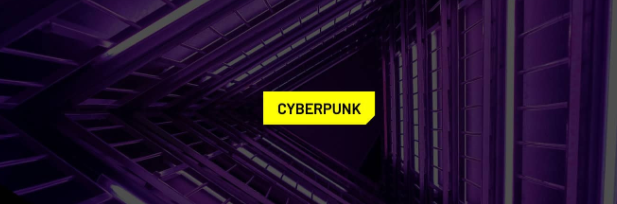

clip-path no CSSclip-path, é fácil criar efeitos visuais
impressionantes, como recortes em elementos, que remetem a essa estética.clip-path para criar um botão com um recorte no canto
inferior direito, típico do estilo Cyberpunk.clip-path:
Pontos do Polígono:
clip-path: polygon() definem os vértices do polígono.button {
padding: 8px 15px; /* Espaçamento interno */
background: yellow; /* Cor de fundo */
color: black; /* Cor do texto */
font-family: 'Barlow', sans-serif; /* Fonte */
font-size: 16px; /* Tamanho da fonte */
font-weight: 600; /* Peso da fonte */
text-transform: uppercase; /* Texto em maiúsculas */
border: none; /* Sem borda */
clip-path: polygon(
100% 0, /* Canto superior direito */
100% calc(100% - 10px), /* Desce 10px do canto inferior direito */
calc(100% - 10px) 100%, /* Move 10px para a esquerda no canto inferior */
0 100%, /* Canto inferior esquerdo */
0 0 /* Canto superior esquerdo */
);
}
clip-path100% 0: Canto superior direito.100% calc(100% - 10px): Desce 10px do canto inferior direito.calc(100% - 10px) 100%: Move 10px para a esquerda no canto inferior.0 100%: Canto inferior esquerdo.0 0: Canto superior esquerdo.Esses pontos criam um polígono que recorta um pequeno retângulo no canto inferior direito do botão.
Efeitos Externos Ocultos:
clip-path também recorta efeitos externos, como bordas e
sombras de caixa (box-shadow).Personalização:
clip-path para criar diferentes formas e recortes.circle) ou elipses
(ellipse).Suporte a Navegadores:
clip-path em Can I
use.<button>Clique Aqui</button>
button {
padding: 8px 15px;
background: yellow;
color: black;
font-family: 'Barlow', sans-serif;
font-size: 16px;
font-weight: 600;
text-transform: uppercase;
border: none;
clip-path: polygon(
100% 0,
100% calc(100% - 10px),
calc(100% - 10px) 100%,
0 100%,
0 0
);
}

clip-path é uma ferramenta poderosa para criar designs únicos e
modernos, como a estética Cyberpunk.